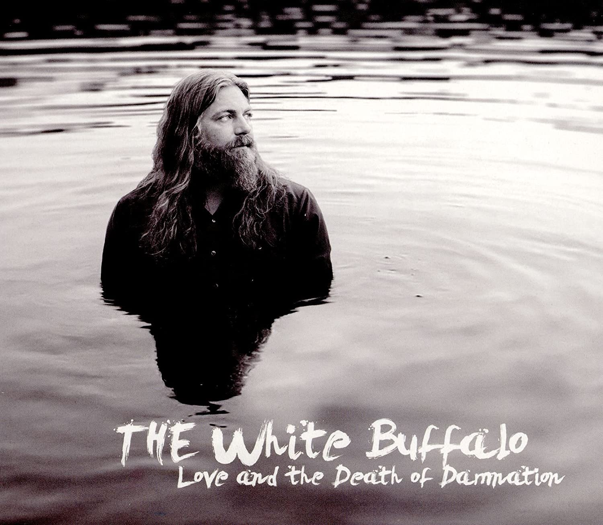

<!DOCTYPE html>
<html></html>
<head>
        <meta charset="utf-8">
        <title>The White Buffalo</title>
  <link rel="icon" type="image/png" href="IconeTwb.png">
  <style>
    table, th, td {
        border: 1px solid #000000;
        border-collapse: collapse;
        }
   th, td {
        background-color: #d4d9d6;
        }s
        th, td {
        padding-top: 10px;
        padding-bottom: 5px;
        padding-left: 10px;
        padding-right: 10px;
}
    </style>
<style>
        body{
                background-image: url('twb.jpg');
                background-repeat: no-repeat;
                background-attachment: fixed;
                background-size: cover;
        }
ul {
  list-style-type: none;
  margin: 0;
  padding: 0;
  overflow: hidden;
  background-color: #333;
}

li {
  float: left;
}

li a {
  display: block;
  color: white;
  text-align: center;
  padding: 14px 16px;
  text-decoration: none;
}

li a:hover {
  background-color:#95a399;
}
</style>
</meta>
</head>
<body>
  <ul>
    <li><a href="TwbSite.html" target="_blank">Home</a></li>
    <li><a class="active" href="Albums.html" target="_blank">Album</a></li>
    <li><a href="Origem.html" target="_blank">Origem Artística</a></li>
    <li><a href="TWB.html" target="_blank">The White Buffalo</a></li>
    </ul>
  <table style="margin-top: 10px; margin-left: 40px;">
    <td>
      <a style="text-decoration:none;" href="https://open.spotify.com/album/1GGBfEsxtYSmN1by7fADYV?si=jOAi7jQgRDapbE_LPDZ11A" target="_blank">
      </a>
      <p><center><i><p style="font: size 50px; font-family: Impact, Haettenschweiler, 'Arial Narrow Bold', sans-serif;">Love and Death of Damnation</i></center></p></a>      
    <ol>
      <li style="font: size 50px; font-family: Impact, Haettenschweiler, 'Arial Narrow Bold', sans-serif;">-I Got You</li></br>
      <ol type="I" style="margin-left: -128px;">
        <a style="text-decoration: none; color: #6e1d1c"; href="https://open.spotify.com/track/18lZDzgg3HetL1FmmcED1j?si=d60bcbd405ba43c4" target="_blank"><center><strong>-Música mais ouvida do Álbum</strong></center></a>
      </ol>
      <li style="font: size 50px; font-family: Impact, Haettenschweiler, 'Arial Narrow Bold', sans-serif;">-Dark Days</li></br>
      <li style="font: size 50px; font-family: Impact, Haettenschweiler, 'Arial Narrow Bold', sans-serif;">-Chico</li></br>
      <li style="font: size 50px; font-family: Impact, Haettenschweiler, 'Arial Narrow Bold', sans-serif;">-Go The Distance</li></br>
      <li style="font: size 50px; font-family: Impact, Haettenschweiler, 'Arial Narrow Bold', sans-serif;">-Radio With No Sound</li></br>
      <li style="font: size 50px; font-family: Impact, Haettenschweiler, 'Arial Narrow Bold', sans-serif;">-Home Is In Your Arms</li></br>
      <li style="font: size 50px; font-family: Impact, Haettenschweiler, 'Arial Narrow Bold', sans-serif;">-Modern Times</li></br>
      <li style="font: size 50px; font-family: Impact, Haettenschweiler, 'Arial Narrow Bold', sans-serif;">-Last Call To Heaven</li></br>
      <li style="font: size 50px; font-family: Impact, Haettenschweiler, 'Arial Narrow Bold', sans-serif;">-Where Is Your Savior</li></br>
      <li style="font: size 50px; font-family: Impact, Haettenschweiler, 'Arial Narrow Bold', sans-serif;">-Rocky</li></br>
      <li style="font: size 50px; font-family: Impact, Haettenschweiler, 'Arial Narrow Bold', sans-serif;">-Come On Love, Come On In</li></br>
    </ol>
    </td>
  </table>
</body>
</html>